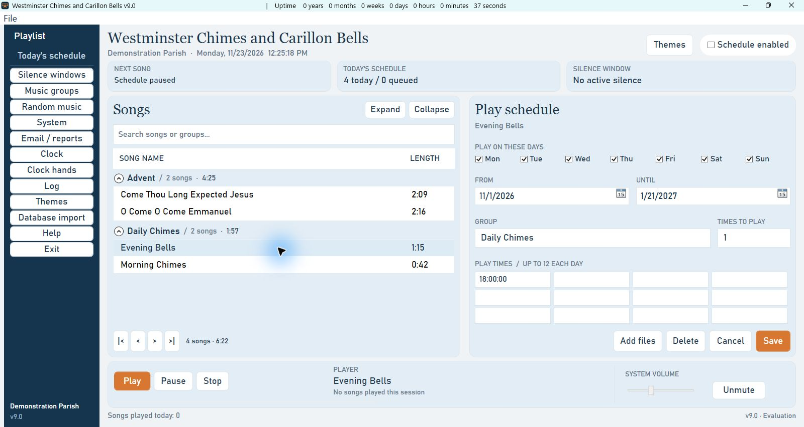
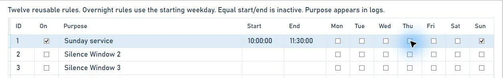
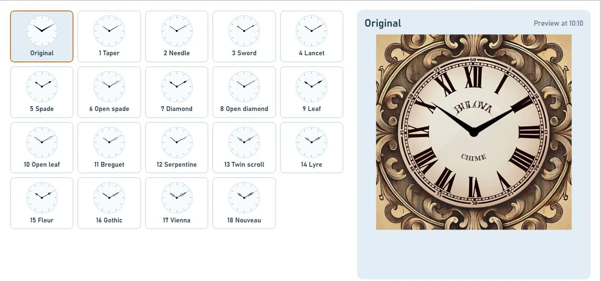

See the day at a glance
Next Song, Today's Schedule, and Silence Window show what's due and when the bells are quiet. Find a recording by song or group and test it with the player.
Version 9.0 preview
A portable Windows bell system for churches and community organizations. Set hourly chimes, plan seasonal music, and keep bells quiet during services or special events.

What's new in v9
Version 9.0 was rebuilt in C# and Windows Presentation Foundation. It carries forward the grouped playlist, seasonal rotation, silence windows, and analog clock from 8.1 in a new, resizable workspace.

Next Song, Today's Schedule, and Silence Window show what's due and when the bells are quiet. Find a recording by song or group and test it with the player.
V9 remembers which scheduled events it already sent to the player that day. Restarting the app avoids repeating those events.
Preview a morning report on screen. Inspect a selected database read-only, and verify a backup before replacing the local database through import.
Choose weekdays, start and end dates, and up to twelve times per day for a song.

Use twelve reusable weekly silence windows for services, rehearsals, or evenings.

Preview fourteen hand styles plus Original. Save the one that suits the clock face in your installation.

Installation and upgrades
Both routes use one self-contained Windows executable. Choose the build that matches the Windows system running the bells.
Start with a USB package that includes the app, a starter time-marking schedule, the supplied recordings, and local Help. Review the schedule and test the output before running it live.
Open the Quick Start GuideKeep your schedule and recordings where they are. V9 opens an 8.1 database directly. For 7.2.4, it creates a verified backup before converting the database in place.
Open the Database Migration GuideBells and hymn music
Browse the existing library of bell and hymn arrangements by title or hymnal. The app can pick a random recording from a default folder or one of six dated alternatives each year.
Browse the music libraryWestminster Chimes, Five O'Clock Strike
Open chime MP3Carillon Hymn, Nearer My God to Thee
Open hymn MP3Planning your installation
The app plays through a Windows audio output. Start by checking whether your existing amplifier, speakers, and wiring suit the listening area and output level you need.
Use a dedicated PC for regular operation. Connect its audio output to an amplifier matched to your installed speakers.
Choose suitable indoor speakers or weather-resistant outdoor speakers for the areas that should hear the bells.
Ask an audio professional to check load, wiring, and coverage. Verify the sound onsite at the times and volumes you intend to use.
The app keeps schedules, settings, and playback logs in its installation. Optional email reports use the mail account configured by your organization.
This preview has no account, payment, or contact form. Translation is provided by GTranslate, audio samples are hosted by Wix, and outside documentation and music links open their respective services.
V9 source is available under Apache License 2.0. The project carries additional notices for reused source and dependencies. Music collections are distributed separately.
For general questions, comments, or suggestions, tell us about the installation you're planning. Support is available as time permits.